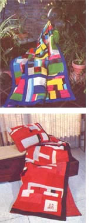
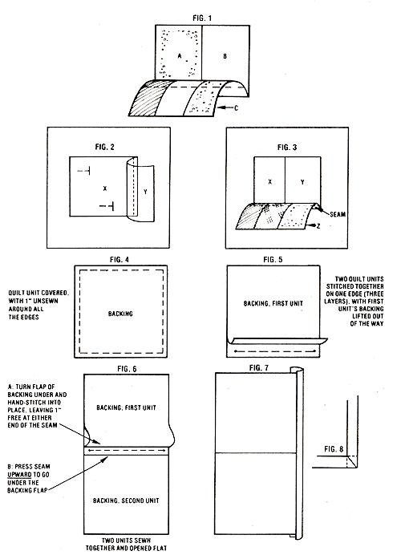

Don't discard your worn-out woolens! Let them warm you twice, by turning them into . . .
We all know that wool is wonderfully warm . . . but many of you may be surprised to learn that a pretty coverlet made of this natural fiber is a luxury that anyone with access to a sewing machine can afford! In fact, except for the backing material (which I found on sale), I didn't spend a cent on any of the colorful patchwork pieces shown in the accompanying photographs. All the material used in my creations was salvaged from old clothes or sewing scraps . . . and I even used thread left over from other projects to assemble the components.
Actually, I was downright astonished by how quickly I was able to collect enough usable woolen material to make a coverlet. People are usually so glad to have their castoffs put to good use that they thank me for taking them! Folks who make their own clothes are also great potential sources of cloth scraps. (I once got nearly a yard of brand-new woolen material from a friend who had misjudged how much she needed to make a dress.) Don't overlook men's clothing shops, either. A lot of fitters throw out perfectly good material cut during the alteration process, and I've sometimes come across pieces as wide as six inches.
WASH THE WOOL
Before you begin to put a coverlet together, wash all your material-both old and new-in cold water, with a soap recommended for laundering wool. (This cleaning should take care of any shrinkage that might otherwise occur the first time you wash your finished product.) In addition, be sure to cut around any moth holes or weak spots in used material. These can be found easily by holding the fabric up to the light.
I'd suggest that you avoid using knits, since they can be difficult to handle in sewing and will sometimes run. Blends of wool and synthetics are acceptable, but 100°10 synthetics aren't as warm as wool and are sometimes troublesome to work with and care for.
It's also wise to press all of your cloth before you begin, and to do so again after each step in the assembly process, using a steam iron or a damp cloth with a regular iron. Don't press all the seams open . . . just iron them so they all face in one direction (such seams are stronger than the open variety). Finally, since various weaves will stretch in different ways, don't knock yourself out trying to make each seam perfect. You'll find that irregularities actually add to the coverlet's charm.
FAST VERSUS FANCY
I use two methods when making my quick-and-comfy covers. The first technique doesn't require much advance planning . . . in fact, you can produce a multicolored coverlet (like the blue-bordered one pictured in the photo) simply by piecing together a bunch of sections and then deciding later what to do with them. Since you'll sew the backing on last, you could even change your mind and turn your patchwork efforts into a cozy shawl, a quaint pillow, or a warm skirt.
To tackle this "simplified" project, begin by sewing the sides of two squares or rectangles (A and B) together as shown in Fig. 1. Then stitch another piece-or several put together patches (C)-across the bottom of the first two . . . press the seam . . . and continue adding patches until the section reaches the size and shape you want. Next, go on to start a new section, adding it to the first in the same manner in which you assembled the patches: Just sew them together . . . press the seam . . . and continue piecing until the coverlet's top is complete.
To put on the backing, sew together (or cut, as the case may be) a section of material that's the same size as the front patchwork piece. Then position those two parts with their right sides together, and stitch along three sides.
Now, turn your project right side out . . . press the seams . . . turn in the raw edges on the fourth side . . . and finish sewing by hand (or, if you prefer, topstitch the border on the machine). Then, if you like, you can run a machine stitch around the entire coverlet at a point about two inches in from the edge. (It's also a good idea to use scrap yarn to tuft the backing to the top cover, in order to prevent the two sides from sagging or pulling away from each other.)
That's my fast method. If, however, you'd prefer your coverlet to have more of a quilted look about it, you'll have to use the "fancy" method . . . which takes a bit longer, but is well worth the effort. To begin, decide what size you want the finished cover to be, and cut your backing material into squares or rectangles that will-when pieced together-equal the desired dimensions. (I've found that pieces 15" to 30" on a side are easiest to work with.)
Next-as illustrated in Fig . 2-pin one of your wool patches (X) approximately in the center of the larger square of backing, making sure that wrong sides are together. Put
another woolen patch (Y) over one edge of Patch X (right sides together this time) . . . sew it along one edge, all the way through Patch X and the backing . . . and iron the material flat.
Now, attach a patch or several patches already put together (Z), whose length equals the long edge of X and Y . . . sewing in such a way that the seam runs through Z, X, Y, and the backing, as indicated in Fig. 3. Press the seam . . . and continue adding patchwork pieces to the raw edges until the entire unit is covered, leaving only the outside edges unsewn (Fig. 4). This will allow for material to be flapped back when the separate units are hitched together.
After you've quilted all your large backing squares individually in this manner, it's time to put two of those units together, patchwork sides touching. Join them by folding back the unsewn inch on the backing of the first unit and sewing the remaining three layers together on one edge, using a 112" to 518" seam and leaving one inch free at either end of the seam (Fig. 5). Then iron your newest seam flat . . . push it upward . . . tuck in the backing fold . . . and stitch by hand as illustrated in Fig. 6. Continue sewing the units together until you have several long strips, then stitch those strips together in the same manner, until your coverlet is completed. (If necessary, trim the outer edges to straighten them.)
As a final step, you'll want to bind the coverlet's borders. So cut strips the length of each side . . . adding enough allowance to miter the corners (Figs. 7 and 8). These pieces can be any width you feel is appropriate. Simply sew the strips along the outside edges with the right sides together . . . press the seams . . . fold the strips over . . . tuck under the raw edges of the backing seams . . . and sew by hand. To miter the corners, fold the ends of the strips diagonally and tuck in the excess, then slip-stitch them in place.
Joan Lindeman
As energy costs rise, more and more people have turned to goose down quilts for wintertime comfort. Unfortunately, many of us who need to worry about the expense of turning up the thermostat simply can't afford that luxury (such a quilt costs anywhere from $100 to more than $600, depending on its size, the quality of the filling, and the particular sales outlet marketing it), even if it's available in a do-it-yourself kit.
I faced this problem not long ago, and searching for a solution-1 turned to flannel. Cozy, cuddly, soft cotton flannel sheets, shirts, and gowns have kept generations of folks toasty warm through many a freezing season, so (1 reasoned) a quilt that was topped and backed with that cloth would certainly be effective in keeping out the cold-weather chills. The inspiration drove me to my scrap bag, my neighbors, and finally, to local fabric shops in search of surplus material.
My plan, you see, was to make a piecework quilt of flannel . . . rather than the usual cotton muslin or broadcloth. The material 1 gathered came mainly from friends who make infant and toddler clothes, pajamas, nightgowns, and shirts . . . but remnant bins in fabric shops did provide me with pieces that 1 was able to use to fill in the patterns and carry out the color scheme of my design. Of course, if 1 hadn't been able to find such giveaways, I could still have finished my project . . . because new flannel is inexpensive enough to allow a thrifty seamstress or seamster to make a comforter from whole cloth.
SELECTING A PATTERN
Because of the fine nap typical of flannel, I chose quilt patterns composed of large, bold design elements rather than small and intricate pieces. Perhaps the simplest approach of all would have been to sew a comforter with a printed (or plain) flannel tap, a plain backing, and a layer of batting between, all border-stitched and held together with yarn ties every 4-1/2 inches. If you're inexperienced but still would prefer to make a piecework quilt instead of a simple comforter, just sew a patchwork of 4-1/2" squares. Stitch the quadrangles together into nine-patch sections (three rows of three patches each) that-allowing for 1/2" seams-will measure 12" on each side. Sew these large squares together into rows until you have a quilt of the size you desire.
Flannel can be used in traditional patterns, too, as the accompanying photo of the "Flower Basket" quilt illustrates.
Washable, versatile, warm, and soft, this cotton is a lovely fabric. Let it help make your winter a cozy one . . . and when it comes to comfort, why not reach for flannel!
|
 |
 |
|